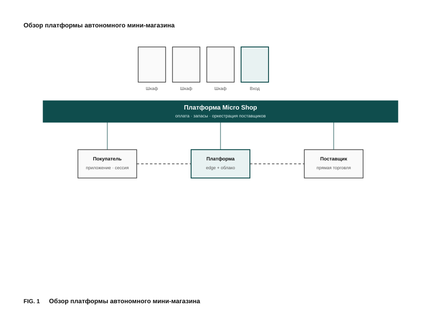
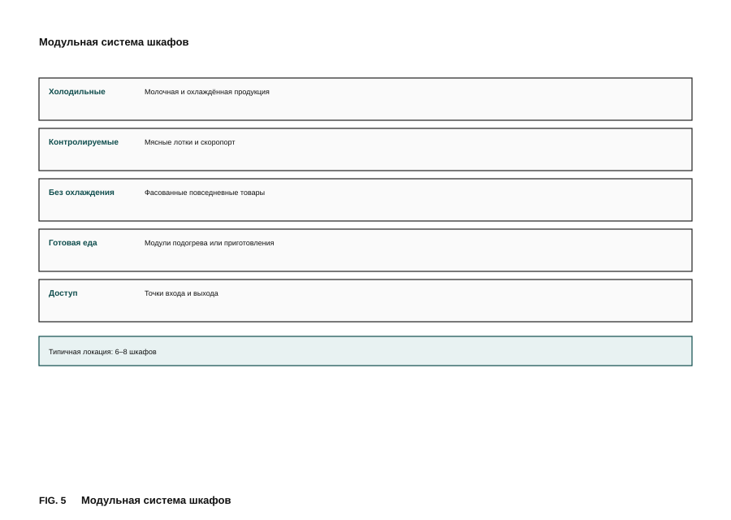
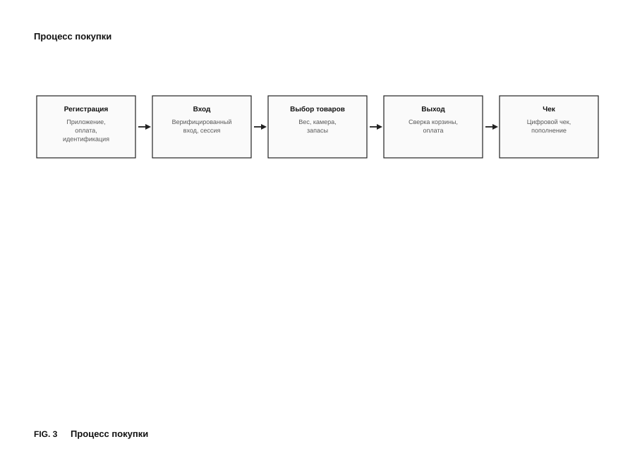
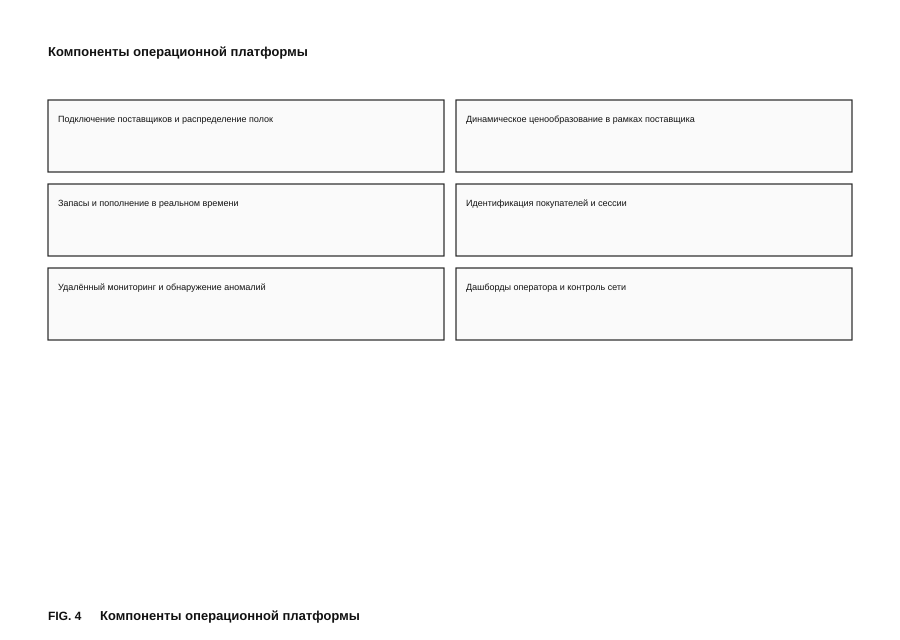
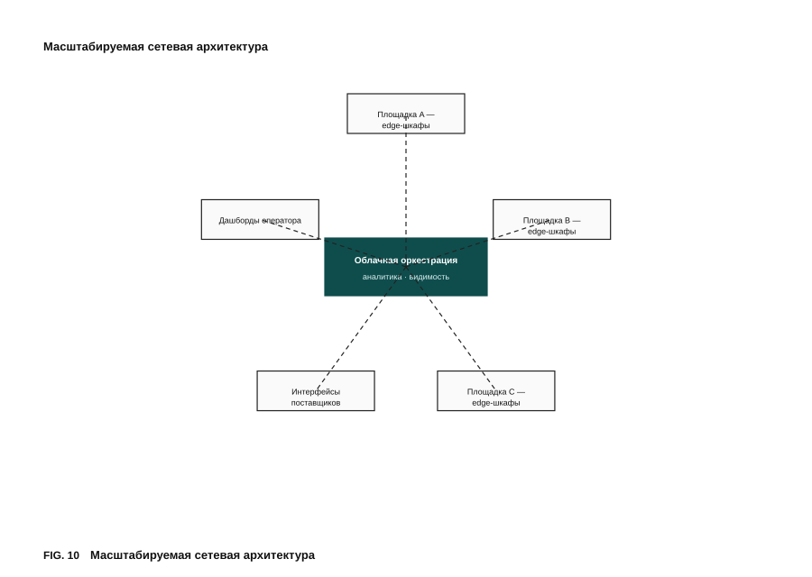
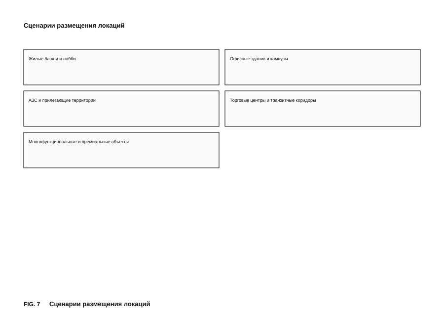
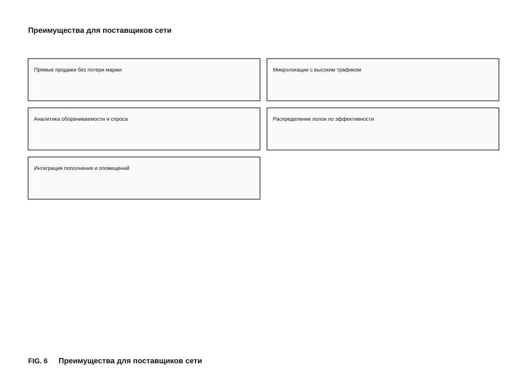
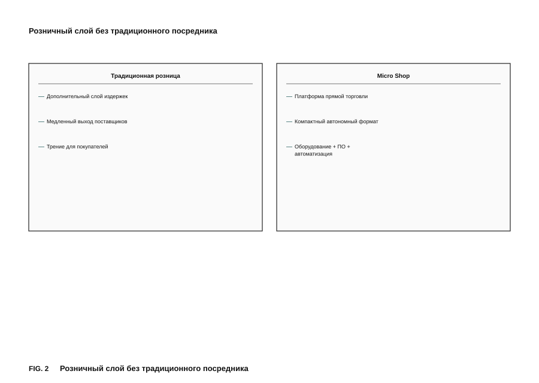
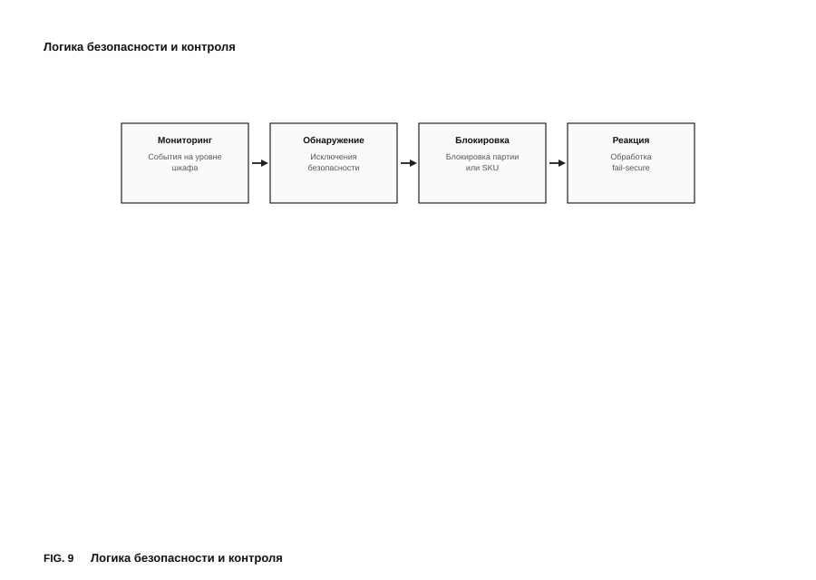
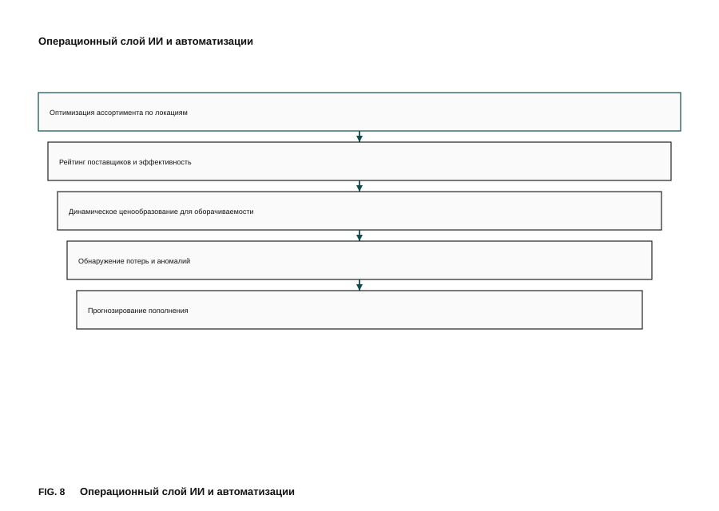

Слайд 01 · Обложка
Модульная автономная розничная система
Micro Shop — не «ещё один вендинг», а инфраструктура торговли рядом с клиентом, где оборудование, программное обеспечение и операционная модель объединены в единую платформу прямой торговли.
Охлаждённые, повседневные и готовые к разогреву товары в точках реального трафика — за 60–120 секунд.

Слайд 02 · Краткое резюме
Кратко о проекте
Проект решает задачу доступа к базовым продуктам и готовой еде в точках регулярного трафика. Он совмещает автономную выдачу, контроль товара, интеллектуальное управление ассортиментом и масштабирование как сети модулей, а не отдельных вендинговых точек.
На текущем этапе сформированы концепция, архитектура MVP, инвестиционная логика и активная патентная работа: 9 предварительных патентных заявок (PPA), проработка с патентным поверенным, разработка ТЗ и подбор производства под разные географии.
Ставка на новую инфраструктуру автономной повседневной торговли, где патенты, оборудование и платформенная модель собираются в единый масштабируемый бизнес.
Слайд 03 · Проблема
Проблема
Магазин на дорогой, маленькой или транзитной площади требует персонал, постоянные операционные расходы и не даёт экономики на микролокациях. Пользователю нужен не «поход в магазин», а базовые продукты и готовая еда рядом с домом, офисом, апартаментами, кампусом или транспортным узлом.
Вендинг и «умные холодильники» обычно ограничены узким ассортиментом, слабой конфигурацией и не образуют полноценную розничную операционную систему. Остаётся разрыв между мгновенным доступом и торговой экономикой.
Слайд 04 · Решение
Решение
Набор умных шкафов и торговых модулей конфигурируется под свежие, охлаждённые и горячие блюда. Физический модуль — не шкаф с выдачей, а автономная операционная система розницы.
В цепочке нет обязательного классического ритейлера: покупатель взаимодействует с системой, поставщик управляет ассортиментом и ценой через платформу. Формат — инфраструктура прямой торговли, а не «автомат по продаже».
Слайды 05–06 · Продукт и технология
Продукт и технологии
Модульный шкаф с логикой ведущий/ведомый, универсальными интерфейсами и гибкой сборкой конфигураций под локацию. Переконфигурируемый ведущий шкаф, модульные полки, распределённая сенсорная сеть, вертикальная шина, контроллер на объекте, тепловые и продуктовые узлы выдачи.

Один модульный подход закрывает несколько повседневных потребностей — платформенность, а не одна товарная ниша.
Оплата: как только покупатель взял товар из шкафа — ещё до закрытия двери шкафа — происходит списание средств, и кассовый чек сразу приходит в приложение или на указанный электронный адрес.

Покупатель — быстрый автономный сценарий без кассира. Локация — розничный сервис без персонала. Поставщик — прямое управление товаром и ценой. Оператор — сеть модулей и платформенный контроль. Модель связывает покупателя, поставщика, владельца локации и оператора в системе прямой торговли.
Корпус, вертикальная шина, двери и замки, вес/RFID/NFC, камеры, датчики среды, отсеки выдачи, тепловые и продуктовые узлы.
Идентификация, сессии, цифровой двойник запасов, рейтинг поставщиков, резервирование, удалённая выдача, раздельные расчёты, верифицированная обратная связь, контроль сети.
Доступ, оплата, сессия, чек, резервирование, обратная связь, удалённая выдача.


Слайд 07 · Почему сейчас
Почему сейчас
Рост ожиданий к мгновенному удобству, давление на офлайн-экономику, зрелость IoT и ИИ и спрос на безлюдные форматы торговли создают благоприятный момент входа.
Проект уже на стадии патентования, инженерной проработки и промышленной подготовки — окно определяется тем, кто первым соберёт защитимый патентный контур и выстроит производственную цепочку.
Слайд 08 · Рынок
Рынок
Автономная розница · повседневная торговля · автоматизация общепита · дистрибуция на последнем метре. Целевые локации — жилые комплексы, бизнес-центры, апарт-отели, кампусы, транспортные узлы, АЗС, ТЦ — где нужен повседневный спрос без полноформатного магазина.

Слайд 09 · Бизнес-модель
Бизнес-модель
Модули, финансирование серий, развёртывание
Поддержка сети, операции, мониторинг
Платформенное управление, аналитика, слой ИИ
Несколько поставщиков на платформе, раздельные платежи, аренда слотов, доля выручки с локациями
Подключение поставщиков, распределение полок, рейтинг на базе ИИ, удалённое управление ценой слотов, раздельные расчёты. Поставщики независимо управляют ценами через приложение; платформа автоматически делит выручку.

Слайд 10 · Конкурентное отличие
Конкуренция
Масштабируемая модульная платформа, а не разовое устройство.
Оборудование + ПО + операционная модель в одном контуре.
Цифровой канал «покупатель ↔ поставщик» без классического ритейлера.
Защищаемый набор технических и бизнес-механик, а не только автоматизация полок.

Слайд 11 · Патенты
Патенты и интеллектуальная собственность
Патентная стратегия — центральная ось проекта. Работа с формулировками пунктов и переводами ведётся с патентным поверенным. Для инвестора: защищаемость, лицензионная ценность и барьеры входа, а не только скорость выхода на рынок.
| PPA | Тема | Архитектурное ядро |
|---|---|---|
| 1–4 | Ранние концепции Micro Shop: прямая торговля, ИИ-ассортимент, модель поставщик/локация/оператор | Физический модуль + SaaS + мобильное приложение |
| 5–6 | Биометрия и управление запасами | Биометрия на входе + движок сессий + учёт запасов |
| 7 | Модульная розничная система | Переконфигурируемый шкаф, вертикальная шина, тепловые и продуктовые узлы, индукция, ИБП |
| 8 | Контроль качества сыпучих продуктов | Бункер 45°, тензоячейка, взвешивание утилизации, цены ИИ |
| 9 | Автономная платформа с верифицированной обратной связью | Обработка отзывов, резервирование, удалённая выдача, расчёты, принуждение |
| 10 | Сквозной контроль тары | Верификация тары на входе/выходе, защита от подмены, несколько сессий |
Платформа управляет множеством модулей и поставщиков; подтверждённые оценки, жалобы, возвраты и события качества — технические управляющие входы. Узлы: контроллер платформы, контроллеры на объектах, приложение покупателя, интерфейс поставщика, движок расчётов, назначение слотов, обработка обратной связи, резервирование и контроль сети.

Регистрация тары на входе, отслеживание массы в сессии, верификация на выходе, обнаружение подмены и неоднозначных событий при нескольких пользователях. Двухзонная платформа, тара от системы, зона возврата, распределение событий между сессиями. Архитектура входного/выходного контроля веса — самостоятельный блок иллюстраций, а не абстрактная «анти-кража».

Слайды 12–13 · Этап и дорожная карта
Этап
Сейчас: патентование умного магазина, разработка ТЗ, подбор и размещение производства — Китай для России, Европа для Дубая и Латинской Америки.
Это стадия после «голой идеи»: патенты → инженерия → пилотное производство → масштабирование сети и платформы прямой торговли.
Завершение патентной упаковки и патентное семейство
Модули и ПО под ключевые сценарии покупки
Кооперация под географии запуска
Инсталляции и проверка экономики точки
Сеть умных шкафов и платформа для поставщиков
Слайды 14–15 · Инвестиционный тезис и запрос
Для инвесторов
Инвестор покупает не устройство и не только пилот, а право войти в формирование стандартов архитектуры, патентов и бизнес-модели автономной розницы. Экспозиция к стоимости патентного портфеля, поставкам оборудования, регулярному сервису/ПО и платформенной экономике прямых поставщиков.
9 PPA и расширяемое патентное семейство
Поставки модулей и серийное развёртывание
Сервис и SaaS по сети
Раздельные платежи, слоты, несколько поставщиков
Умные модули · управление на базе ИИ · платформа поставщиков · биометрические сессии · контроль качества продукции · верификация тары на выходе — в единой масштабируемой архитектуре.
Micro Shop — платформенный слой управления поставщиками, сетью модулей, ценообразованием, резервированием, выдачей и патентуемыми сценариями контроля.